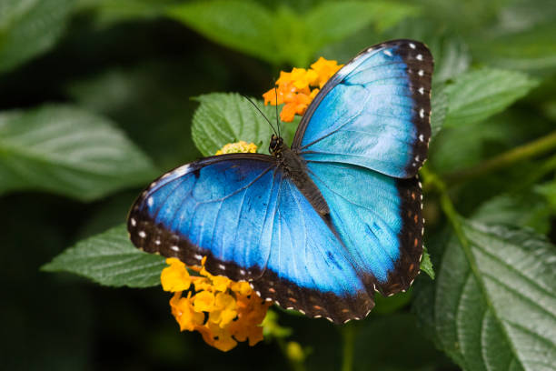

La mariposa morfo azul es un espectáculo inolvidable para cualquiera que haya podido presenciar su vuelo en su hábitat natural de la selva amazónica. El Morfo Azul es ciertamente una especie que lleva consigo la verdadera esencia del Amazonas: la belleza que se encuentra en el corazón de la vida salvaje y una convivencia natural que mantiene la supervivencia. Esa es una de las varias razones por las que la Fundación ACEER ha elegido la mariposa Morfo Azul para utilizarla como parte de nuestro logotipo.
Con una estética que deleita al ojo humano, el Morfo Azul también tiene su papel como parte del ecosistema. La selva amazónica necesita a sus especies autóctonas, como el Morfo Azul, para que el ecosistema siga prosperando, pero primero estas especies necesitan su hogar para hacerlo. A medida que la deforestación continúa, las especies nativas del Amazonas están experimentando colectivamente la pérdida de su hábitat natural. Con el aumento de la deforestación se produce una disminución de la sostenibilidad del medio ambiente y hasta las criaturas más bellas de la selva no son una excepción. Junto con muchas otras especies de animales e insectos de la selva tropical del Amazonas, la mariposa Morfo Azul está en peligro de extinción. La crisis climática a la que nos enfrentamos exige la urgencia de proteger la selva tropical y las especies autóctonas que no pueden reemplazar su hogar. La protección de la mariposa Morfo Azul es importante por sus cualidades únicas y el papel que desempeña en el ecosistema; este icono amazónico es realmente insustituible.
Con el aumento de la deforestación disminuye la sostenibilidad del medio ambiente y hasta las criaturas más bellas de la selva no son una excepción.
La mariposa Morfo Azul, también conocida como Morfo Azul Peleides, necesita un clima tropical para prosperar. Reside en las selvas tropicales de América Latina, llegando desde México, Colombia e incluso Costa Rica; estas mariposas se pueden admirar volando por la selva y a lo largo del agua. Perteneciente a la familia Nymphalidae, la Morpho Azul es una de las mariposas más grandes del mundo, con una envergadura de cinco a ocho pulgadas. El nombre de Morpho Azul se refiere a cualquiera de las mariposas azules del género morpho, "También hay otras numerosas especies de Morpho, que son 29 en total, incluyendo las mariposas marrones, verdes y las increíblemente raras mariposas blancas" (Rainforest Cruises, 2016).
Los machos de morphos son conocidos por su hermoso color azul, cuando en realidad no son azules en absoluto. Estas mariposas están dotadas de alas iridiscentes que les dan una apariencia azul, resultado de "una microestructura en su superficie superior que refracta la luz, haciendo que brillen cuando las mariposas toman el sol" (Christensen, 2002). En cambio, su parte inferior es de color marrón con manchas oculares que les sirven para camuflarse de aves e insectos. El nombre de Morpho podría tener su origen en la ilusión que crean de aparecer y desaparecer alternando del azul al marrón. Debido a que los morfos machos necesitan encontrar pareja, están dotados de un azul estético en contraste con las mariposas hembras, que suelen tener un color menos llamativo porque no están diseñadas para impresionar a los machos. Sin embargo, la naturaleza está llena de lagunas que pueden crear una criatura de doble género.